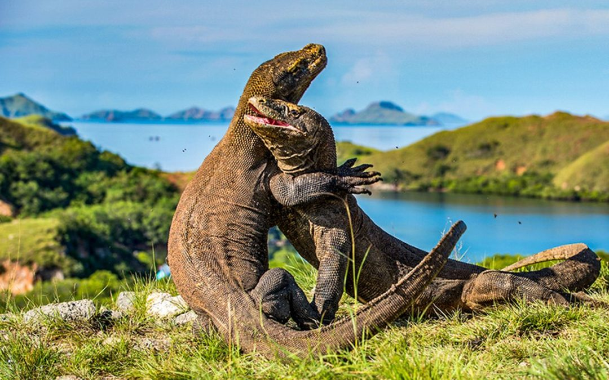

Komodo adalah spesies kadal terbesar yang masih hidup temukan secara alami di Kepulauan Komodo Flores dan pulau-pulau sekitarnya spesies ini dikenal karena ukurannya yang besar kekuatan gigitan dan peran sebagai predator puncak di ekosistemnya.
biologi Komodo termasuk adaptasi khusus seperti metabolisme yang lambat kemampuan mencium bau dengan bantuan organ jacobson dan teknik berburu yang melibatkan racun saliva penelitian terus mengungkap mekanisme ekologi dan fisiologi komodo.
Komodo memang peran penting dalam ekosistem Pulau sebagai pengendali populasi mangsa namun, keterbatasan habitat dan tekanan oleh aktivitas manusia membuat konservasi menjadi prioritas
taman Nasional Komodo didirikan untuk melindungi spesies dan habitatnya program konservasi mencakup pengelolaan pariwisata perlindungan wilayah pembiakan dan penelitian populasi.
su yang dihadapi meliputi perubahan habitat oleh pertanian konflik manusia satwa dan potensi dampak perubahan iklim pada sumber daya air dan bangsa upaya mitigasi diperlukan untuk kelangsungan spesies.
pariwisata memberikan keuntungan ekonomi lokal tetapi harus ditangani secara bijaksana agar tidak mengganggu perilaku alami komodo dan merusak habitat sensitif.
Pendidikan komunitas dan keterlibatan pemangku kepentingan lokal adalah inti dari strategi konservasi yang berkelanjutan pendekatan ini membuat menyelaraskan kebutuhan pelestarian dengan kesejahteraan masyarakat.
secara kolektif perlindungan Komodo memerlukan penelitian lanjutan kebijakan yang kuat dan komitmen jangka panjang untuk melestarikan makhluk ikonik ini.
